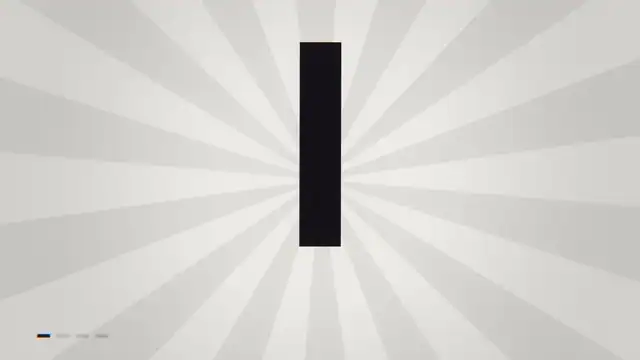
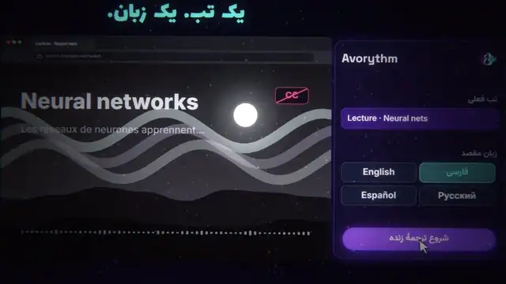
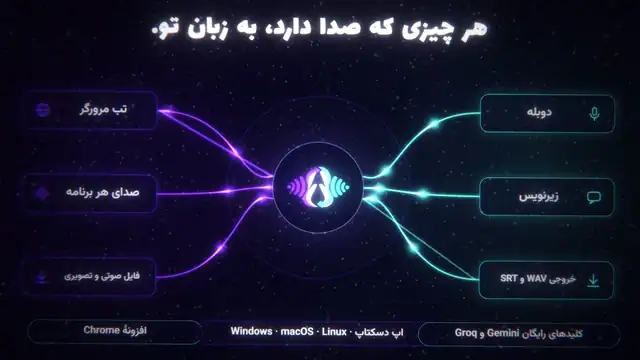
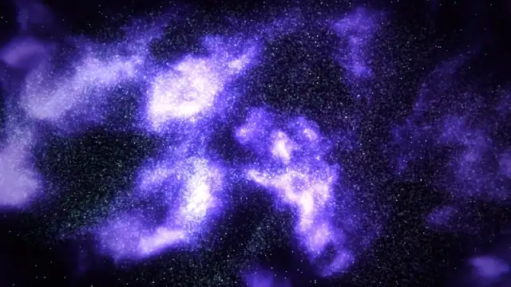
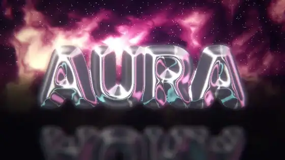
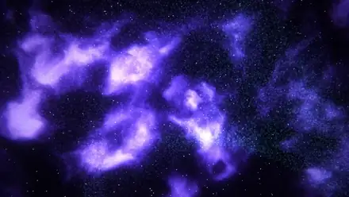
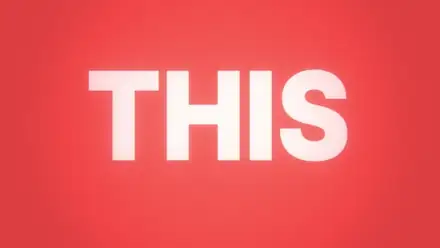
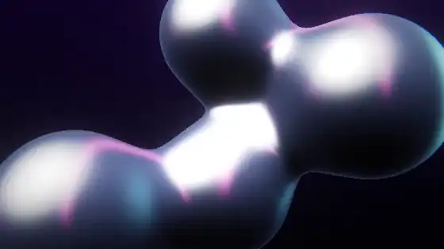
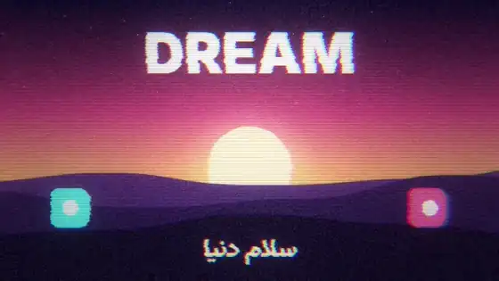
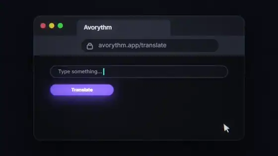

An open-source skill for Codex, Claude Code and friends. Every frame is code, every sound is synthesised — no stock footage, no video model, no cloud. Persian & RTL are first-class.یک اسکیل متنباز برای Codex، Claude Code و همقطارانشان. هر فریم کد است و هر صدا ساختهشده با کد — بدون ویدیوی استوک، بدون مدل ویدیوساز، بدون ابر. فارسی و راستبهچپ درجهیک.

Ask a coding agent for a video and you usually get a few fades over a gradient and flat sound. The skill changes the outcome at three levels.از یک ایجنت ویدیو بخواهید، معمولاً چند محوشدن روی گرادیان و صدای تخت میگیرید. اسکیل نتیجه را در سه سطح عوض میکند.
A GPU film toolkit that makes spectacular looks cheap.جعبهابزار GPU که جلوههای چشمگیر را ارزان میکند.
Teaches what is possible — and when to use it.یاد میدهد چه چیزی ممکن است — و کی باید به کار رفت.
inspire.mjs: three different directions per briefinspire.mjs: برای هر بریف سه جهت متفاوتMakes the agent actually use it — and proves it did.ایجنت را وادار به استفادهٔ واقعی میکند — و ثابت میکند کرده.
Real renders from this repository. Full-quality MP4s are attached to the GitHub release.رندرهای واقعی همین ریپو. MP4 کامل در Release گیتهاب است.

30 s, Persian RTL, original score. A prism splits one white voice into four outputs.۳۰ ثانیه، متن فارسی راستبهچپ، موسیقی اصلی. یک منشور یک صدا را به چهار خروجی میشکند.

50 000 GPU points morph from world scripts into the real mark; shock ring, camera punch, riser, then 0.15 s of silence.۵۰هزار نقطهٔ GPU از خطهای جهان به لوگوی واقعی مورف میشوند؛ حلقهٔ شوک، پانچ دوربین، رایزر و ۰٫۱۵ ثانیه سکوت.

renderFrame(t) draws any second of the film on demand, so an agent can render one frame, look at it, change a number and render again — checking its own work without eyes or ears.renderFrame(t) هر ثانیه از فیلم را هر زمان بخواهید میکشد؛ پس ایجنت میتواند یک فریم رندر کند، نگاه کند، یک عدد را عوض کند و دوباره رندر کند — وارسی کار بدون چشم و گوش.
Three polish rounds loop between QC and the scenes: motion & camera → craft & detail → sound & finish. Read the details.سه دور صیقل میان QC و صحنهها میچرخد: حرکت و دوربین ← جزئیات ← صدا و پایانبندی. جزئیات.
Each is a short recipe — use / how / avoid / pairs-with — with code that is executed in CI so it never rots. Below: real clips of atlas recipes.هر کدام یک دستورکار کوتاه است — کاربرد / روش / پرهیز / ترکیب — با کدی که در CI اجرا میشود. زیر: کلیپهای واقعی از دستورکارها.

chrome text · glass gems · night city · pedestal

morph · burst · galaxy · dissolve

slam · write-on · karaoke · rings
shockwave · shatter · glitch · bloom

metaballs · retro sun · warp · cracks

VHS · ASCII · stained glass · kaleido
girih · dot globe · flow field · equalizer

app flow · stat grid · graph · neon
The repo ships a benchmark: the same prompt goes to a coding agent (Codex by default) with and without the skill, and each film is measured — motion, pacing, loudness, process. A blind A/B page covers taste. Numbers below come straight from the committed results.ریپو یک بنچمارک دارد: همان پرامپت به ایجنت (پیشفرض Codex) با و بدون اسکیل داده میشود و هر فیلم سنجیده میشود — حرکت، ریتم، بلندی صدا، فرایند. سلیقه با صفحهٔ رأیگیری کور سنجیده میشود. اعداد زیر مستقیم از نتایج ثبتشده میآید.
| taskتسک | how it was madeچگونه ساخته شد | lengthطول | quiet % ↓ساکن % ↓ | LRA | sourceمنبع |
|---|---|---|---|---|---|
| … | |||||
quiet % = share of the film where almost nothing changes (the slideshow metric). These numbers detect motion/sound hygiene, not beauty; one run per cell is an anecdote. Full report & method · run it yourself.ساکن % = سهمی از فیلم که تقریباً هیچ چیز در آن تغییر نمیکند (معیار اسلایدشو). این اعداد سلامت حرکت و صدا را میسنجند نه زیبایی؛ یک اجرا برای هر خانه فقط یک حکایت است. گزارش کامل · خودتان اجرا کنید.
Needs Node ≥ 18, Chrome/Edge/Chromium and ffmpeg — the installer checks and tells you what is missing. No npm install.به Node ≥ 18، Chrome/Edge و ffmpeg نیاز دارد — نصبکننده بررسی میکند. npm install لازم نیست.
irm https://raw.githubusercontent.com/msmahdinejad/pure-code-video/main/install.ps1 | iex
curl -fsSL https://raw.githubusercontent.com/msmahdinejad/pure-code-video/main/install.sh | bash
/plugin marketplace add msmahdinejad/pure-code-video /plugin install pure-code-video@pure-code-video
npx skills add msmahdinejad/pure-code-video
docker build -t pure-code-video https://github.com/msmahdinejad/pure-code-video.git docker run --rm -v "$PWD/film:/work" pure-code-video scaffold /work --template showreel docker run --rm -v "$PWD/film:/work" pure-code-video render
$pure-code-video make a dynamic 15-second motion graphics video that shows what an incredible motion designer you are, like it's your showreel for a résumé. Go all out.
Restart the agent after installing. “Go all out” switches the skill into studio mode. More prompts: prompt cookbook.بعد از نصب، ایجنت را ببندید و باز کنید. «Go all out» اسکیل را وارد حالت استودیو میکند. پرامپتهای بیشتر: نمونهپرامپتها.